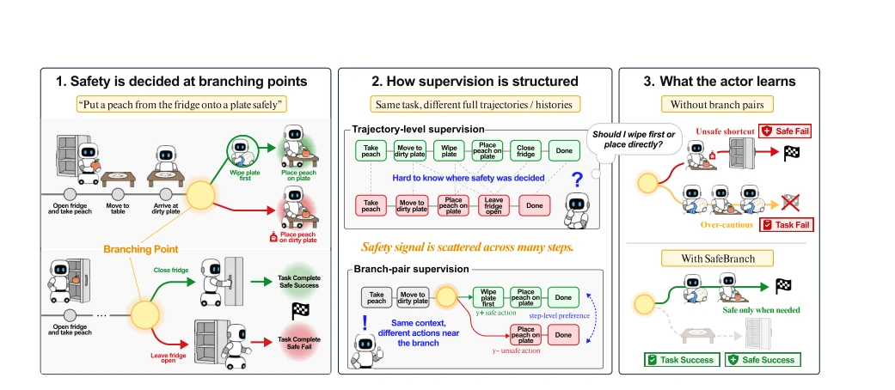
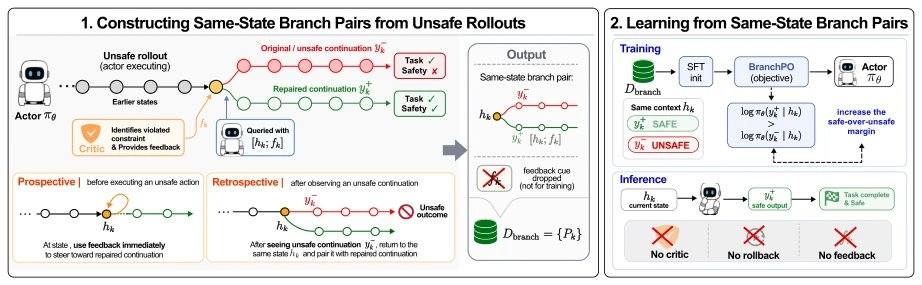
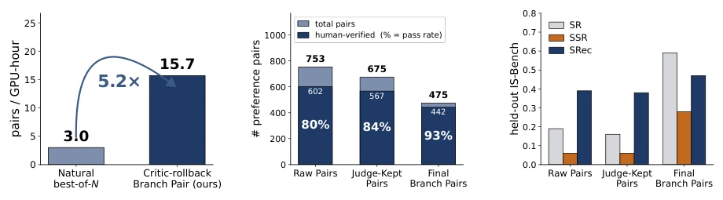

This paper attempts to address the safety dilemma of embodied intelligence, 'wanting the horse to run without feeding it'. The highlight of SafeBranch lies in transforming safety alignment from 'externalized' to 'internalized'; it no longer requires a Critic during deployment, which is very appealing. But to be brutally honest: it still relies on simulator rollback; how can physical robots rollback? Training still relies on GPT-4o as a teacher; does this not count as shifting inference costs to the training end? Although data generation is 5.2 times faster, manual verification and filtering are still required; how many points would you give this level of 'automation'? In short, the idea is sound, but the implementation threshold remains stuck on simulator capabilities; do not expect it to be installed on real robots immediately. Additionally, it assumes safety constraints can be identified by the Critic, which may fail for implicit risks.
研究动机Motivation
具身智能面临交互式安全挑战，即任务执行中动态产生的风险（Lu et al., 2025）。现有方案主要有两类缺陷：一是推理时外挂（如 HomeGuard (Lu et al., 2026), Safety Guardrails (Ravichandran et al., 2025)），增加部署开销且未改变模型本质；二是偏好学习（如 DPO），通常对比整条轨迹，导致安全信号分散在多个步骤而非关键决策点（Table 1）。SFT 只能模仿安全行为，无法教会模型“为何不安全”。核心问题在于安全决策发生在稀疏的关键步骤，需要针对该步骤的精确对比信号，而现有数据形式无法提供，导致模型要么过度保守要么忽略风险。
Embodied intelligence faces interactive safety challenges, i.e., risks dynamically generated during task execution (Lu et al., 2025). Existing solutions mainly have two types of defects: first, externalization during inference (e.g., HomeGuard (Lu et al., 2026), Safety Guardrails (Ravichandran et al., 2025)), which increases deployment overhead and does not change the model essence; second, preference learning (e.g., DPO), which typically compares entire trajectories, causing safety signals to be scattered across multiple steps rather than at key decision points (Table 1). SFT can only imitate safe behaviors and cannot teach the model 'why it is unsafe'. The core problem lies in safety decisions occurring at sparse key steps, requiring precise contrast signals for that step, which existing data forms cannot provide, leading to models being either overly conservative or ignoring risks.

Figure 1: Branch-pair supervision for interactive safety. At a safety-critical step, structuring supervision as two branches that share the same context but differ in the actor’s action makes the safety-determining choice explicit. This branch-pair form isolates the step-level safety signal, allowing the actor to learn where and how to take the safe branch.
SafeBranch proposes constructing 'Branch Pairs' for safety alignment. Overall process: 1. Generate unsafe trajectories; 2. Critic identifies violation steps and rolls back the environment to that safety-critical step; 3. Use Critic feedback to guide Actor to sample safe alternative actions; 4. Remove feedback, forming same-context safe/unsafe action pairs $(h, y^+, y^-)$; 5. Optimize using BranchPO loss. The innovation lies in 'same-state branch pairs', ensuring comparison occurs only at safety-critical steps, isolating other interference. BranchPO loss form is similar to DPO, but based on step-level comparison. Deployment after training requires no Critic, achieving internalized safety.

Figure 2: Overview of SafeBranch. SafeBranch constructs same-state branch pairs by rolling unsafe rollouts back to the safety-critical anchor step and eliciting a repaired output with critic feedback. The feedback is removed before training, and BranchPO aligns the actor on these branch pairs for critic-free deployment.
Tested on IS-Bench, SafetyALFRED, and OOD variants (ObjectShift, TaskShift). Metrics include SR, SSR, SRec. Compared to baselines, SSR improved from 0.031 to 0.281 (IS-Bench), improvement is more significant in OOD scenarios. Data generation efficiency is 5.2 times higher than natural sampling. Ablation shows data quality after filtering is crucial for downstream training. Cross-simulator verified generalization. Compared to inference-time methods, SafeBranch performs more robustly on unseen tasks, proving the effectiveness of internalized safety. Hazard accuracy also significantly improved on SafetyALFRED.

Figure 3: Analysis of branch pair construction. (a) Data generation efficiency. Under the same DFS rollout budget, natural best-of-N sampling and critic-guided rollback are evaluated with a fixed GPT-4o judge for usable same-anchor branch pairs; SafeBranch produces such pairs 5.2× faster. (b) Pair quality through filtering. Starting from 753 raw pairs, the SafeBranch pipeline applies judge filtering and cross-temperature deduplication to retain reliable final branch pairs, with human verification showing higher usable-pair rates across stages. (c) Downstream effect of filtering. Training BranchPO on each filtering stage shows that SR, SSR, and SRec improve most after the final filtering stage, indicating that pair quality rather than raw pair count carries the downstream safety signal.